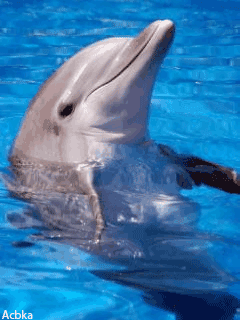

- Animales de superficie:
- Animales de arrecife::
- Animales de profundidad
- Animales abisales:
Tiburón blanco:
Pez piedra:
Medusa:
Serpiente de mar:
Cocodrilo marino:
¿Cuáles son los animales acuaticos?
Los animales del mar o animales marinos son aquellos que están adaptados a la vida dentro del mar, en su superficie o en sus orillas. Dado que nuestro planeta está en dos tercios de su superficie cubierto por agua, la vida marina abarca una enorme y diversa cantidad de animales, repartida en los cinco océanos y adaptada a sus hábitats específicos.
Tipos de animales que hábitan el mar:
Los más cercanos al Sol y por lo tanto acostumbrados a las aguas más cálidas y luminosas, en donde abundan las algas y el plancton, pero también los depredadores.
Que forman extensas comunidades en torno al coral, las piedras y los bosques de algas de diverso tipo, en algunos de los lugares más biodiversos del planeta, equivalentes a selvas tropicales, pero bajo el mar.
Que viven en aguas más frías y oscuras, a mayor profundidad, en un hábitat más exclusivo y retador.
Habitantes de las regiones más hondas, oscuras, gélidas e inhóspitas del mar, a las que no llega la luz solar y que se hallan bajo inmensas presiones ambientales.
A continuación se muestra una tabla en la que se reflejan algunos ejemplos sobre los tipos de animales dichos anteriormente:
| Animales de superficie | Animales de arrecife | Animales de profundidad | Animales abisales |
|---|---|---|---|
 |
 |
 |
|
|  |  |
 |
 |
Aunque quizas el mar nos parezca un lugar increible para visitar, debemos tener en cuenta que allí exísten criaturas que aunque hermosas son muy peligrosas, aqui te mostramos algunas de ellas:

El tiburón blanco o Carcharodon carcharias se encuentra en las aguas templadas de todos los océanos y está considerado como uno de los peces de mayor tamaño del mundo. Pertenece a la familia de los lamnidae, puede medir hasta 6 metros y pesar hasta 3 toneladas. Sus mandíbulas disponen de unos 300 dientes afilados de forma triangular y pueden abrirse tanto que su cabeza se deforma para después cerrarse con una fuerza 300 veces superior a la de la mandíbula humana.
Se alimentan a base de peces, focas, tortugas marinas, leones marinos o pequeñas ballenas. A pesar de la mala fama que puedan tener, habitualmente no atacan a los humanos y cuando lo hacen es porque lo han confundido con algún mamífero marino o porque se sienten en peligro.
Además, las mordeduras de estos escualos a humanos no suelen ser letales, pero sí que provocan graves heridas pudiendo hacer que el individuo se desangre, pierda alguna parte de su cuerpo o en el peor de los casos muera. ¡No querrás correr ese riesgo ¿o sí?!
El pez piedra, también conocido como Synanceia horrida, es junto al pez globo, uno de los peces más letales. Esta especie se alimenta de peces pequeños y crustáceos, habita en los océanos Pacífico e Índico, y como su propio nombre indica, tienen un aspecto de piedra que les permite mimetizarse con el entorno. Por esa razón, es muy común que numerosos submarinistas los pisen sin darse cuenta con peligrosas consecuencias.
De hecho, el pez piedra posee una serie de espinas venenosas en sus aletas dorsales, pélvicas y anales repletas de neurotoxinas y citotoxinas más mortíferas que el veneno de la cobra..
Así, cuando un ser humano se pincha con una de estas púas, la zona se hincha instantáneamente y se empiezan a experimentar otros síntomas como dolor de cabeza, vómitos, espasmos intestinales, convulsiones, parálisis muscular, arritmias cardiacas y hasta paradas respiratorias, haciendo que el sujeto termine ahogándose. Aquellos que han experimentado la picadura de este animal afirman que el dolor es tan intenso que preferían que les amputaran la zona afectada a tener que seguir sintiendo ese sufrimiento.
La avispa de mar, avispa marina o cubozoos tienen una forma cúbica característica de la que nacen sus tentáculos mortales. Viven en las aguas de Filipinas, el sudeste asiático y Australia y se alimentan de pequeños peces y crustáceos. Eso sí, hay que tener en cuenta que la avispa de mar es el ser más letal del planeta, ya que un roce de uno de sus tentáculos provoca una reacción ulcerosa que termina provocando la necrosis de la piel y todo ello acompañado de un dolor equiparable al que produce un ácido corrosivo. Después, la persona afectada sufre un paro cardíaco y todo esto pasa en menos de 3 minutos.
Por ello, si se ve obligado a sumergirse en aguas en las que pueda haber este tipo de animales, lo mejor es llevar la piel cubierta con un traje de neopreno para evitar cualquier contacto y dejar bastante distancia de seguridad con estos ejemplares, ya que aunque no lo parezca, pueden recorrer 2 metros en un segundo con sus contracciones rítmicas.
la serpiente de mar. Llamada también cobra marina, la hydrophiinae es la serpiente con el veneno más potente superando al de su homónima en la tierra, la serpiente Teipán. De esta forma, teniendo en cuenta que una gota del veneno de la serpiente Teipán es capaz de matar a 12 personas provocando que sus órganos se deshagan y que mueran por fallo multiorgánico, se puede entender la peligrosidad de la serpiente de mar
Esta especie se alimenta a base de moluscos, peces y crustáceos, siendo habituales en los océanos Índico y Pacífico. Lo bueno es que sus dientes son bastante pequeños por lo que un traje de neopreno un poco grueso puede ser suficiente para que en caso de mordedura las toxinas no entren en contacto con nuestra piel.
El cocodrilo marino o Crocodylus porosus es el reptil más grande que existe llegando a alcanzar los 7 metros de longitud y 1.200 kilos. Se distribuyen en zonas que abarcan desde el sudeste asiático hasta Australia y pueden vivir cerca de la costa en aguas salobres, estuarios e incluso en agua dulce de zonas de interior. Pueden llegar a alcanzar los 43 km/h gracias al impulso que ejercen con su cola y tiene la potencia de mordida más alta del mundo animal con 1770 kg/cm2, casi superando al desaparecido T-Rex.
Utiliza la técnica del ahogamiento para matar a sus presas y en zonas de Australia llega a atacar a los tiburones. Además, la superpoblación humana está haciendo que se esté eliminando algunos de sus hábitats, lo que provoca numerosos encuentros fatales a lo largo del año. De hecho, la mayor masacre de la que se tiene constancia realizada por el cocodrilo marino ocurrió en 1945 durante la Batalla de Ramree (Birmania), en la que unos 1.000 soldados de ocupación japoneses fueron devorados en una noche por los cocodrilos marinos al tener que cruzar una zona pantanosa huyendo de las tropas británicas que los habían acorralado.